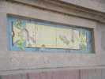
Houlgate est une station calme, qui a su garder ses villas anglo-normandes sur le front de mer, au lieu de bâtir des immeubles plus "rentables" !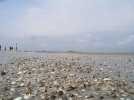
La marée a une grande amplitude, et laisse d'innombrables coquilles (vides), la joie des enfants qui en rapportent des tonnes à Paris !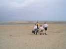
De courageux pêcheurs amateurs, équipés pour marcher dans les flaques, partent pour une pêche amusante, mais sans doute peu fructueuse...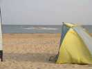
Mais au matin, la mer est quasiment haute, les oiseaux se resserrent sur ce petit monticule qui disparaîtra bientôt complètement...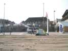
Mercredi matin, donc, j'installe ma tente devant le barnum, il n'y a pas beaucoup de concurrence, les cervolistes arriveront progressivement tous les jours...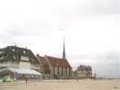
Pas énormément de vent, je sors mon goéland léger au-dessus du clocher du temple protestant...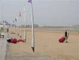
Le Holland Kite Team est là, tôt comme d'habitude, avec une énorme pile de sacs qu'il a fallu apporter, en voiture heureusement, mais maintenant, c'est à bras fermes...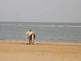
Puis le bagne continue, il faut creuser des trous pour mettre les plaques d'ancrage, car les gonflables, ça tire et au bord de la mer, il y a toujours bon vent à un moment ou à un autre !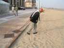
Enfin, il faut s'atteler au charroi, il n'y a pas de tracteur pour porter les plaques, mais le concept est bien, on peut les porter soi-même et les mettre où on veut...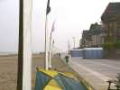
Les bannières sont enfin plantées sur toute la longueur de la plage. C'est tellement long qu'on les laisse en place d'un jour sur l'autre, sans trop de pertes apparemment...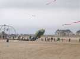
Le vent est encore léger, la pieuvre a du mal à décoller le ventre du sable !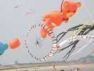
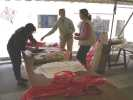
Houlgate, c'est aussi un grand atelier pour enfants. Deux volets : une grande arche au profit d'une assoc pour l'enfance inadaptée en débutant avec des toiles venues de toutes les écoles ! Deuxièmement, des ateliers de Eddies, pour les écoles d'abord, puis pour individuels. Quel boulot !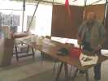
Si les filles bossent, les mecs aussi, pour préparer le total, couper et nouer les ficelles, couper les baguettes...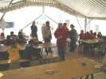
Et les classes débarquent en nombre pour des dizaines de Eddies en bambou et papier. En fait, ils font surtout la déco sur des CVs blancs !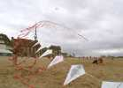
Ca y est, le premier élément d'arche est monté, encore modeste...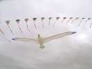
Le vent monte, je peux sortir mon Albatros2 qui pavane au milieu de l'arche !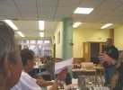
Le soir, repas et hébergement dans les énormes installations du Creps... La Cream Team sort ses hélicos, un bi-rotor 4 axes manoeuvré de main de maître, et un ultra-light incroyablement petit, que l'on voit au-dessus de l'autre sur fond de poteau...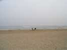
Une autre nuit est passée, K2000 et son copain ont été réveillés par le bruit des vagues de la marée haute !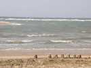
Les bâtisseurs de château ont prudemment construit plus haut et leur oeuvre a survécu...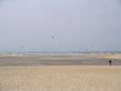
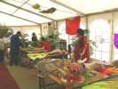
Houlgate est aussi international. A part le barnum atelier, il y en a un plus grand, avec entre autres une grosse représentation chinoise, venue aussi pour conclure des accords pour une fédé internationale en vue des JOs...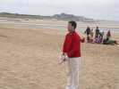
L'un d'eux fait voler des aigles de bambou qu'il fait spiraler dans un vol très naturel ! Pour cela, il faut le dévidoir spécial qui permet d'enrouler et de dérouler à grande vitesse...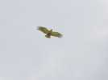
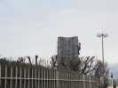
Devant le grand barnum, un mur d'escalade... mobile, tout en plastique ! Et il y a des enfants qui grimpent comme des chamois !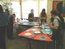
Sous le barnum lui-même, des ateliers : de peinture sur cerf-volant, d'information sur l'énergie éolienne, de cerf-volant malais, etc.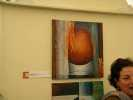
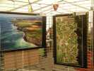
Philippe Frutier expose aussi de superbes photos aériennes prises de son ULM (pas un pendulaire, un vrai petit avion, il ouvre seulement les portes...).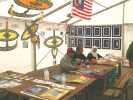
La Malaisie présente aussi une belle collection de Layang-Layang et autres Waus qui voleront tous les jours dès que le vent le permettra...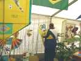
Et Ezéchiel est venu représenter le Brésil, malheureusement sans la charmante Juliana !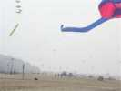
A l'autre bout du terrain les compétitions se terminent. Evidemment, un mégateam se met en place et tournera un bon moment...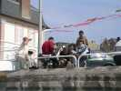
Fini le mégateam, c'est la minute de repos pour les pilotables qui admirent les autres depuis leur belvédère !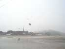
Avec mon Albatros2, je vais faire un petit tour sur l'île aux oiseaux (voir intro). Maintenant, c'est un petit plateau avec une belle vue sur la plage.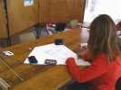
A part l'atelier scolaire de CVs individuels, la fabrication pour l'arche continue. Cette enfant semble extrêmement douée et précoce...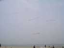
Les CVs des enfants volent très bien si le vent est un peu soutenu. Mais comme les grands, ils aiment tout dérouler et il y a quelques emmêlages...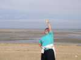
L'atelier reçoit aussi des handicapés physiques ou mentaux, jeunes ou adultes. Et la joie éclaire tous les visages !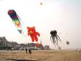
Evidemment, il y a beaucoup de gonflables, mais bon, c'est ce qui attire le plus le public...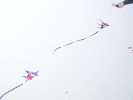
Volent de-ci de-là quand même quelques vrais cerfs-volants, comme ces diables cornus dérivés de Rokkakus !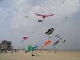
Le vent est bon, je ressors mon Condor réparé sur le terrain après un vol par vent un peu fort à Berck. Ca tient, bien que je n'aie pas repris le bricolage à la maison. Les Hollandais ont une grosse turbine-bouteille de champagne impressionnante !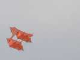
Tout là-haut trône aussi ce beau Cody, très stable et d'une couleur inhabituelle...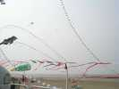
A force de fabriquer des cerfs-volants pour les arches, elles commencent à prendre du volume...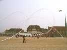
Il y en a même de plus en plus qui se courbent en tous sens et s'entremêlent magnifiquement ! Mais je vais partir le vendredi, et l'atelier va manquer de bras !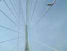